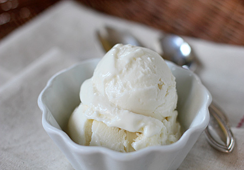
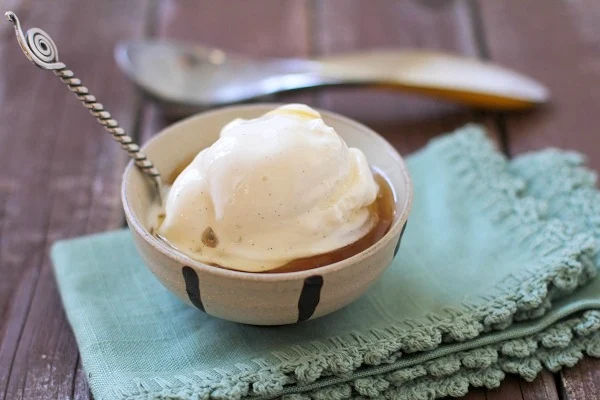

<html></html>
<head>
    <title>recipe</title>
    <meta name="viewport" content="width=device-width, initial-scale=1">
    <link rel="stylesheet" href="recipesty.css">
    <link rel="stylesheet" href="https://fonts.googleapis.com/css?family=Zain|ABeeZee|Inter">
</head>
<body>
    <div class="header">
        <h1>Flavor Fusion</h1>
    </div>
    <div class="navbar">
        <ul>
            <li><a href="frontpage.html">Home</a></li>
            <li><a href="category1.html">Appetizers</a></li>
            <li><a href="category2.html">Main Courses</a></li>
            <li><a href="category3.html">Desserts</a></li>
        </ul>
    </div>
    <div class="name">
        <p style="font-size: 250%;">Frozen Yogurt</p>
    </div>

    <div class="scrolling-gallery">
        
        
        
        
    </div>

    <div class="desc">
        <div class="descinfo">
            <p>
                <p><span class="dietlabels vegetarian">Vegetarian</span> <span class="dietlabels vegan">Vegan</span></p>
                It's important to use good-quality yogurt here. I typically opt for plain Greek Yogurt. The sweetened bright-white, yogurt plays nicely with the tang of the yogurt. If you tend to like things less sweet, you can scale the sugar back to 2/3 with good results.
            </p>
        </div>

        <div class="time">
            
            <br> Total Time: 35 min
        </div>

        <div class="flip-card">
            <div class="flip-card-inner">
              <div class="flip-card-front">
                
                <br>
                Nutritional information
              </div>
              <div class="flip-card-back">
                <p>
                    serving size: 1 of 6<br>
                    calories: 159<br>
                    total fat: .6g<br>
                    carbs: 29g<br>
                    sugar: 28g<br>
                    protein: 10g<br>
                    cholesterol: 5mg<br>
                    sodium: 36mg<br>
                </p>
              </div>
            </div>
          </div>
        
    </div>

    <div class="bottom">
        <div class="ingredients">
            <h2 style="text-align: center;">Ingredients</h2>
            <hr class="divider" style="width: 70%">
            <div class="checkbox">
                <form>

                    <p>
                        <input type="checkbox" name="ingredients" class="strikethrough">
                        <label>3 cups (720g) strained yogurt* or Greek-style yogurt<br></label>
                    </p>
		    <p>
                        <input type="checkbox" name="ingredients" class="strikethrough">
                        <label>3/4 cup (150g) sugar<br></label>
                    </p>
		    <p>
                        <input type="checkbox" name="ingredients" class="strikethrough">
                        <label>1 teaspoon vanilla extract (optional)<br></label>
                    </p>

                    
                </form>
             </div>
        </div>        

        <div class="instructions">
            <h2 style="text-align: center;">Instructions</h2>
            <hr class="divider">
            <div class="steps">
                <ol type="1">
                    <li>Mix together the yogurt, sugar, and vanilla (if using). Stir until the sugar is completely dissolved. Refrigerate 1 hour.</li><br>
	<li>Freeze in your ice cream maker according to the manufacturer's instructions.</li><br>
	<li>*To make 1 cup (240g) of strained yogurt, line a mesh strainer with a few layers of cheese cloth. then scrape 16 ounces or 2 cups (480g) of plain whole-milk yogurt into the cheesecloth. Gather the ends and fold them over the yogurt, then refrigerate for at least 6 hours. So, for the above recipe start with and strain 6 cups of yogurt.</li><br>
                </ol>
            </div>
        </div>
    </div>
</body>
</html>